לאשתי המדהימה
המסע שלנו בעולם
"אוסף של רגעים בערים שהרגישו כמו בית - רק כי את היית שם."
גללו מטה כדי לראות את הזיכרונות שלנו
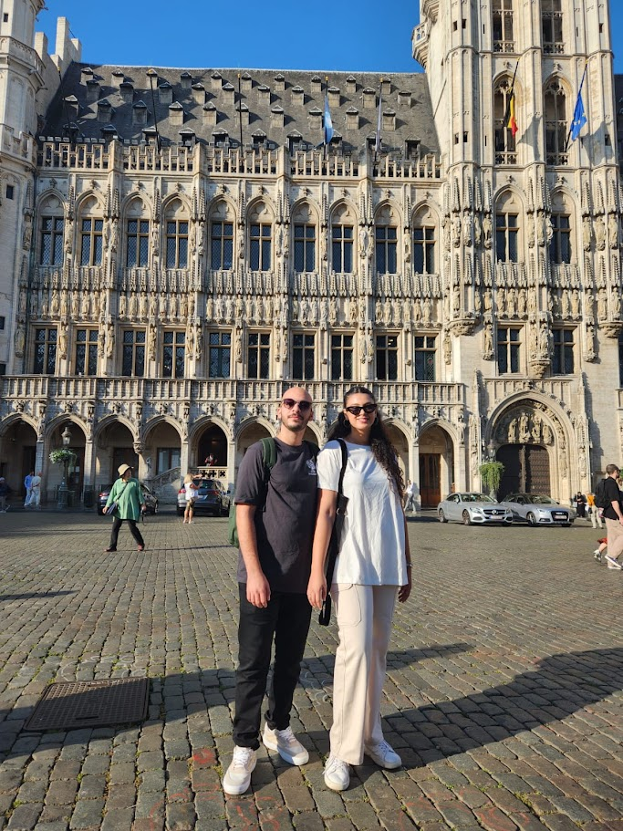
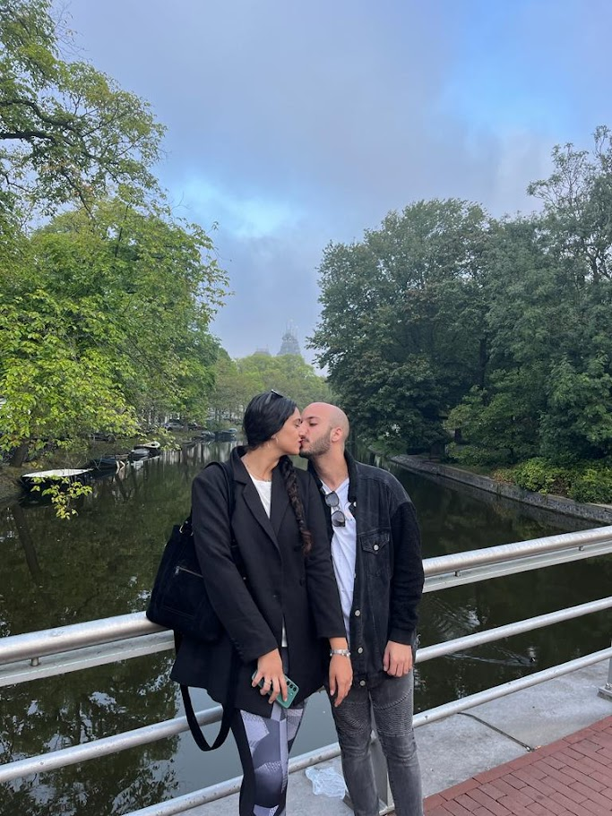
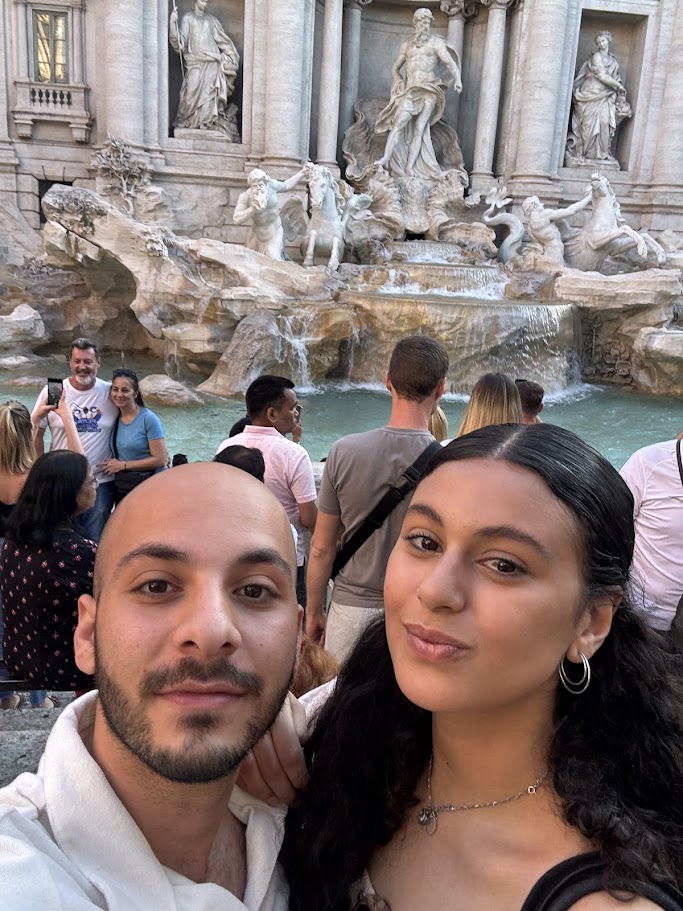
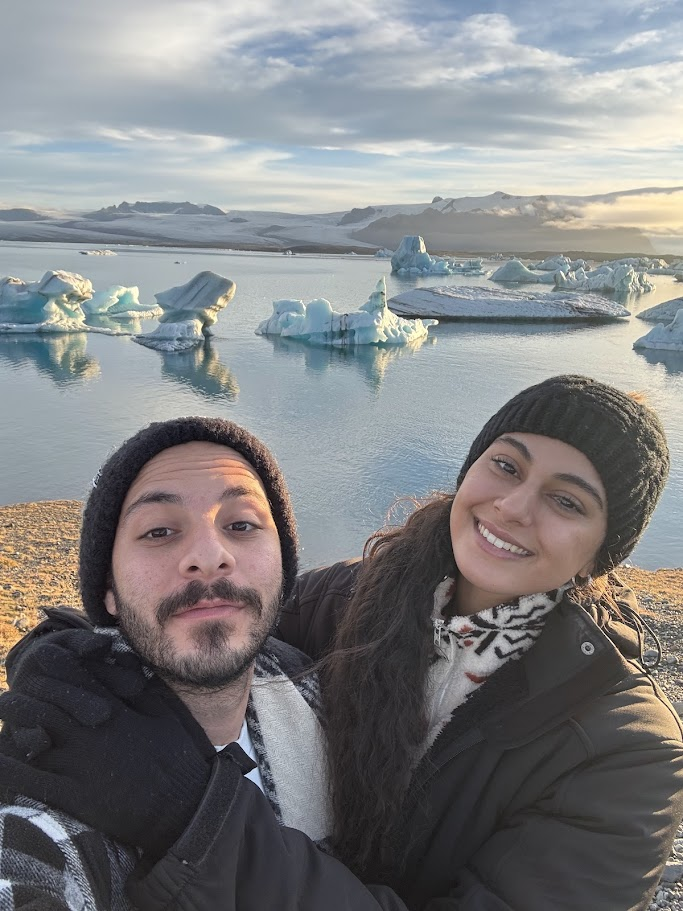
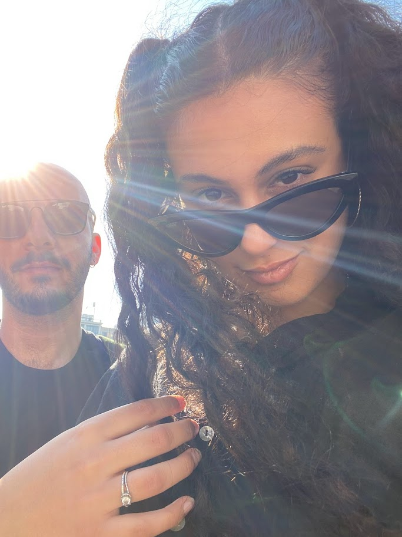
בריסל
בריסל הייתה… חוויה. בין רגעים קצת מלחיצים לרגעים שבהם תהינו איך בדיוק הגענו למצב הזה, יצא לנו עוד סיפור טוב לספר.
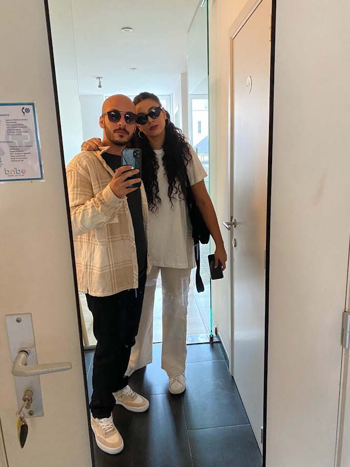
אמסטרדם
אמסטרדם הייתה הטיול הראשון שלנו יחד. הגענו אליה ממש אחרי בריסל, והיא הייתה תיקון מושלם - הפעם לא היה מפחיד, רק כיף. טיילנו עם דויד ושובל, צחקנו בלי סוף (ואולי קצת רבנו), וזה הפך לאחד הטיולים הכי זכורים שלנו.
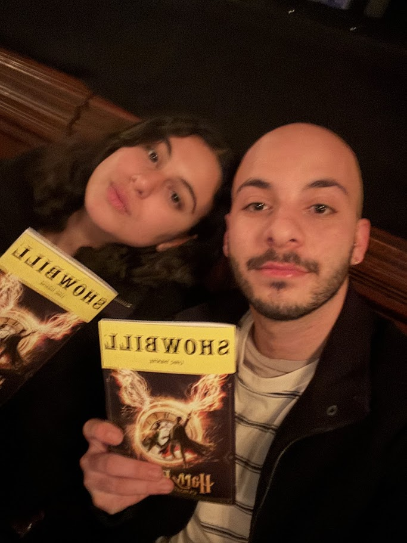
ניו יורק
ניו יורק בשלושה ימים בלבד. נחתנו והלכנו ישר לברודוויי לראות את הארי פוטר, למרות שמישהי הייתה אחרי משמרת כדיילת וסופר עייפה. אפילו שבסוף היא גם לא הרגישה משהו, זה עדיין היה טיול מעולה. ובין לבין גם סוף-סוף טעמתי את הפיש אנד צ׳יפס של גורדון רמזי.
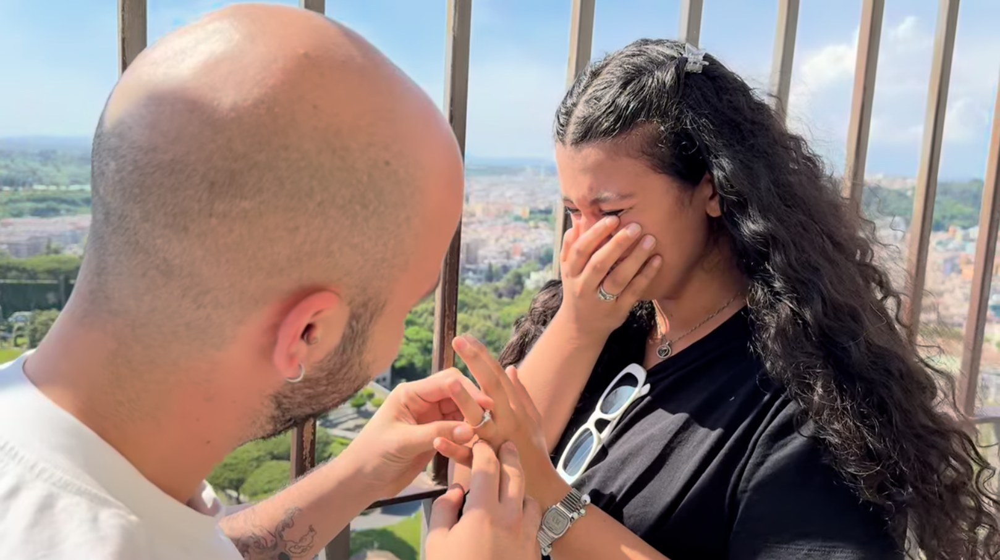
רומא
רומא מלאה בהיסטוריה, אבל מבחינתי הרגע הכי חשוב שקרה כאן היה כששאלתי אותך אם תרצי להתחתן איתי. וככה, באמצע טיול לרומא, החלטנו לקחת את הסיפור שלנו לשלב הבא.
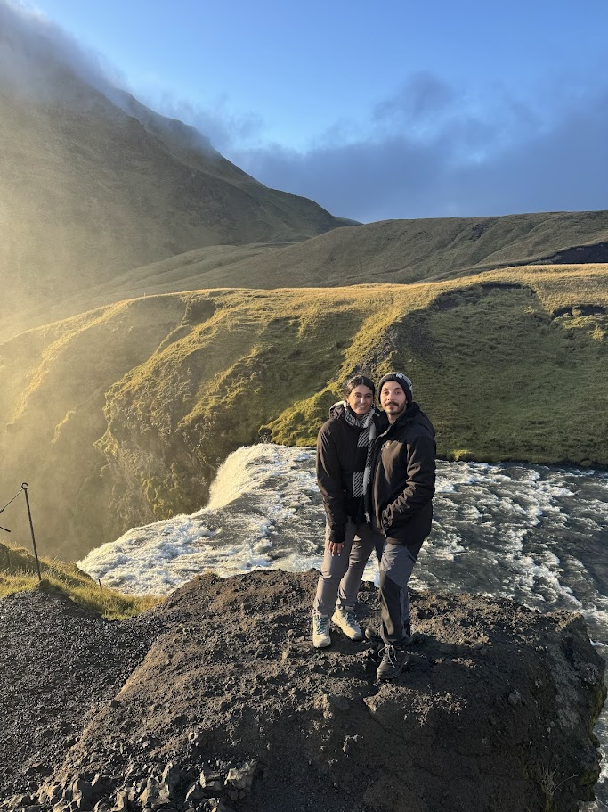
איסלנד
איסלנד הייתה ירח הדבש שלנו - שבועיים במקום שנראה כמעט לא אמיתי. הנופים והחוויות שחווינו שם הם מהדברים שקשה באמת להעביר במילים.
החיים בבית
ההרפתקה הכי טובה מכולן
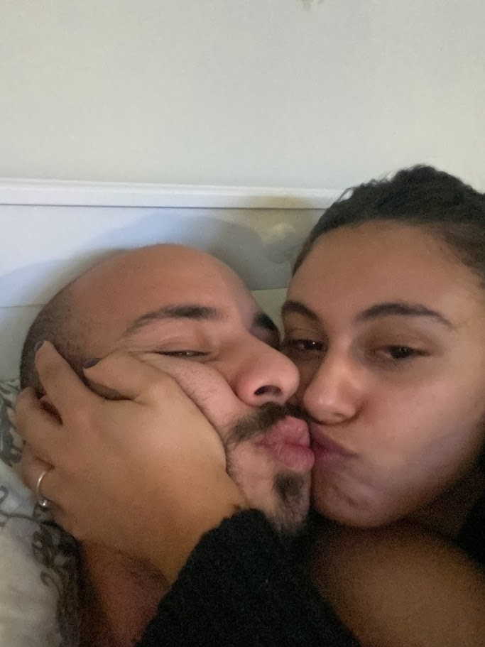
אני
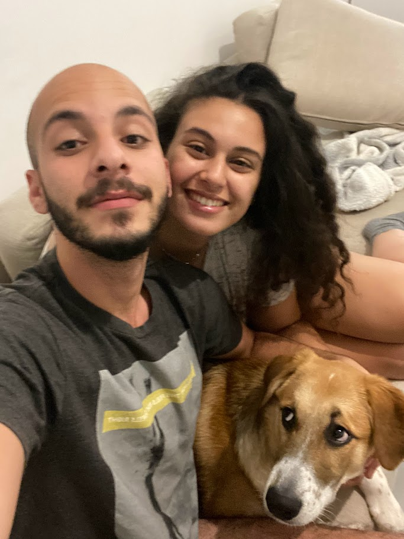
אוהב
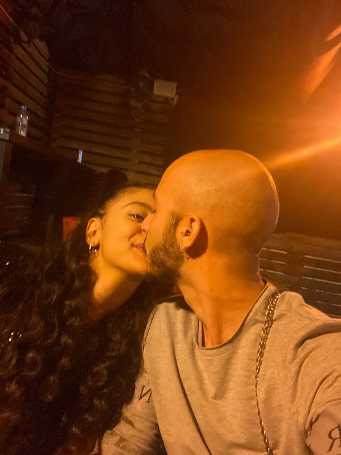
אותך
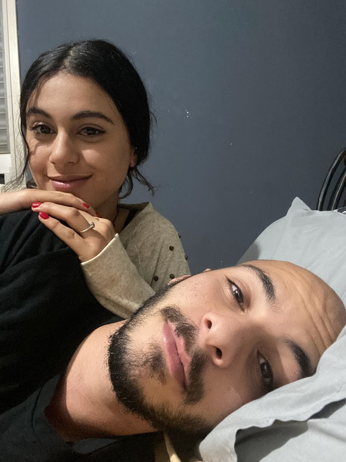
הכי (זאת התמונה האהובה עליי)
לעוד המון הרפתקאות יחד...
אני אוהב אותך יותר מהכל.
מתנה קטנה לאדם האהוב עליי
השותפה שלי, לחיים ולמסע